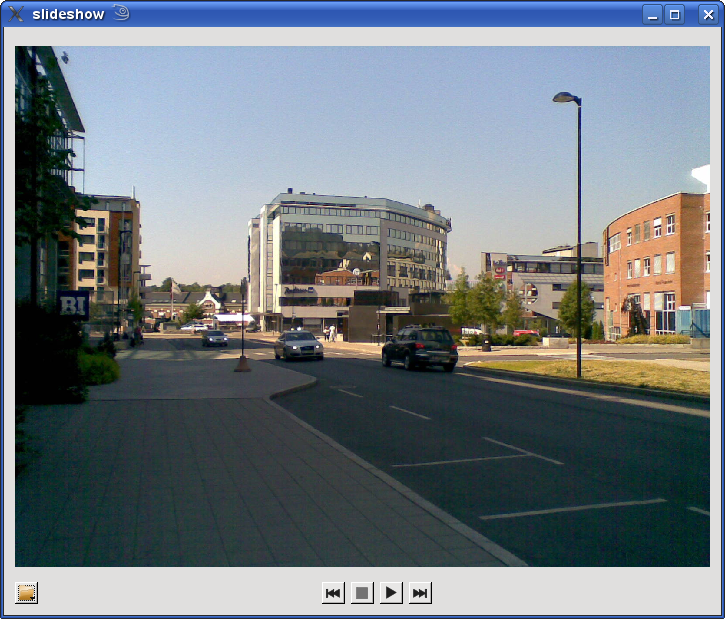

Files:

Slideshow displays a series of time delayed images after you select a source image directory to use. The folder button presents a list of three options: browse for a directory, load a playlist or enter a location.
This implementation uses a QMediaImageViewer object for the image with a QVideoWidget used to do the display. Whether the the source is a browsed directory, a playlist file or a URL to a local or remote location the playlist object in Slideshow is updated with the file or multiple file locations.
connect(imageViewer, SIGNAL(stateChanged(QMediaImageViewer::State)),
this, SLOT(stateChanged(QMediaImageViewer::State)));
playlist = new QMediaPlaylist;
playlist->setMediaObject(imageViewer);
We create a QVideoWidget to display the viewer and add it to the dialog.
QVideoWidget *videoWidget = new QVideoWidget; videoWidget->setMediaObject(imageViewer);
layout->addWidget(videoWidget, Qt::AlignCenter);
The timeout between images is set by changing the timeout property in QMediaImageViewer which is in milliseconds. So to change the timeout to five seconds
imageViewer->setTimeout( 5000 );